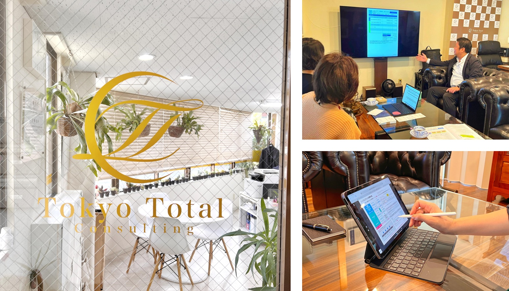

今の状況を整理
家計や保険、資産、ご家族のお悩みを丁寧にお聞きし、まず全体像を整理します。
Consultation Salon
落ち着いて話せる場所で、
これからの安心を一緒に考えます。
保険、相続、老後のお金、事業や不動産のこと。 まだ答えが決まっていないお悩みも、私たちの相談サロンでゆっくりお聞かせください。
相談を予約する
Our Salon
大切なお金やご家族のことは、すぐに結論を出すよりも、 まず落ち着いて状況やお気持ちを整理することが大切です。
相談サロンでは、実際の資料や画面をご覧いただきながら、 分かりにくい制度や選択肢を一つひとつ丁寧にご説明します。
What We Offer
家計や保険、資産、ご家族のお悩みを丁寧にお聞きし、まず全体像を整理します。
保険・相続・老後資金・不動産など、必要な選択肢を資料とともにご説明します。
ご希望に応じて、専門家との連携や手続きの進行まで一緒にサポートします。
A Comfortable Visit
落ち着いた面談空間ゆったりとした椅子に座って、ご家族でも相談いただけます。
画面や資料でご説明見ながら話せるため、初めてのテーマも理解しやすくなります。
森下駅から徒歩1分お越しいただきやすい場所で、事前予約にて承っています。
Customer's Voice
旧ホームページに掲載されていた、前田様からお寄せいただいた声をご紹介します。
私は、都内の一般企業に勤める会社員です。
年に１〜２回、友人と海外旅行に行くのが趣味なので、もともと貯蓄や運用には興味を持っていましたが、旅行の時に“１ドルが今いくらか？”を調べるくらいで、詳しいことはよくわかりませんでした。
たまたま、友人から小西さんを紹介してもらったのですが、最初にお話を聞いた時に「もし、タダで保険に入れる方法があるとしたら、前田さんは入りたいですか？」と聞かれて、あやしい話かな？と思ったのを覚えています。笑
でも、それくらい、小西さんの話は初めて聞くことばかりで面白いです。控除や税金の話は会社でも聞いたことが無かったので、それ以来、ちょっとでもお金のことでわからないことが出てきたら、すぐ小西さんに聞くようにしています。
最初は、半信半疑で小西さんのコンサルティングを受けましたが、今では、保険料がタダになるどころか、着々と金融資産も増えています！次の旅行の行き先をどこにしようか、楽しみに計画しているところです。
2016年の旧ホームページ掲載時のお客様の声を全文で再掲載しています。掲載内容はご本人の当時の感想であり、将来の成果や効果を保証するものではありません。
Reservation
ご相談予約・オンライン面談の調整は、公式LINEまたはお電話から承ります。